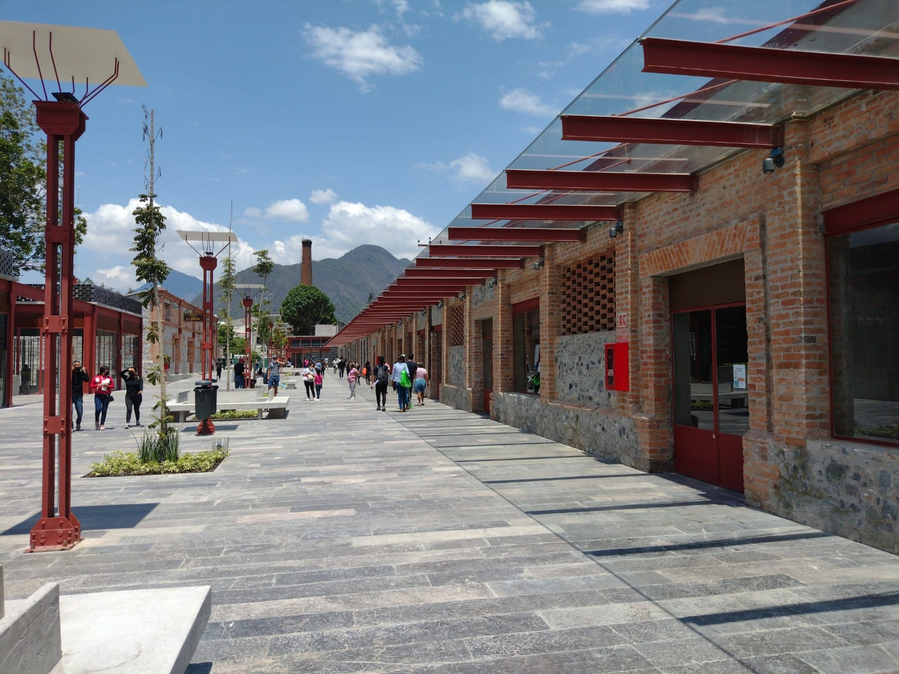

La Fábrica Textil Santa Rosa y el origen de Ciudad Mendoza
Entre 1896 y 1898 se construyó la Fábrica Textil Santa Rosa, también conocida como CIVSA, la cual fue clave para el crecimiento urbano de Ciudad Mendoza. A su alrededor se desarrollaron viviendas y servicios, convirtiéndose en el centro económico de la región. En su auge, llegó a producir más de un millón de metros de tela a la semana y exportaba a países como Italia y Francia. Sin embargo, tras varias crisis, cerró sus puertas a finales del siglo XX.
El Paseo de los Ahuehuetes: un tesoro natural
Este hermoso corredor natural alberga ahuehuetes milenarios, conocidos como "viejos del agua" por su resistencia y longevidad. Durante décadas, el ecosistema se mantuvo puro, pero a partir de 1960, la contaminación comenzó a afectar la calidad del agua y la vegetación. En 2014, se realizaron trabajos de limpieza para recuperar la zona, mejorando su estado ecológico.
Rescate del patrimonio histórico y natural
Años después del abandono de la fábrica, se iniciaron proyectos para su recuperación, convirtiéndola en un espacio comercial con cines, restaurantes y tiendas sin perder su valor histórico. Paralelamente, el Paseo de los Ahuehuetes fue restaurado y convertido en un parque ecológico con más de 1,700 árboles, permitiendo que la comunidad disfrute nuevamente de este espacio natural.
